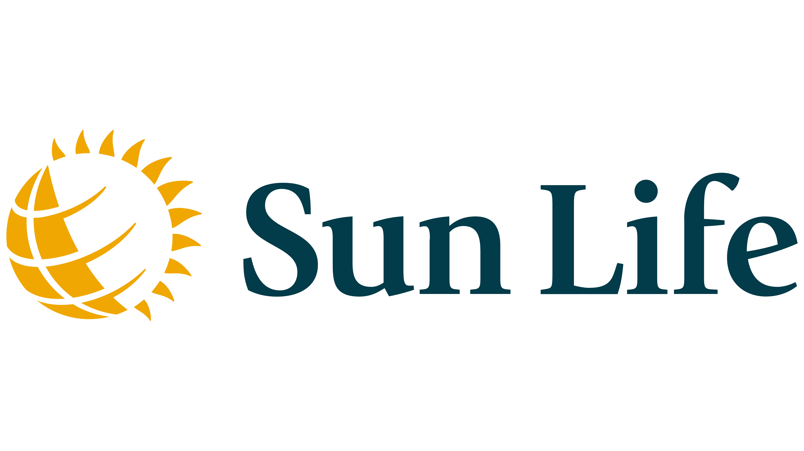
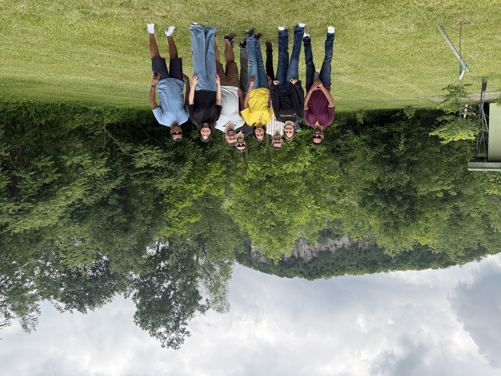
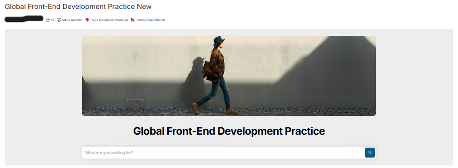
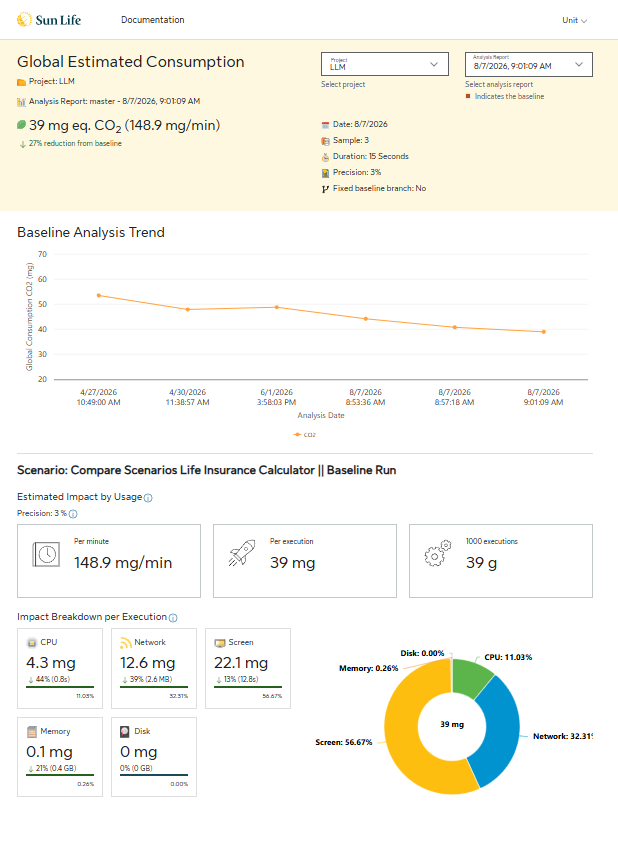
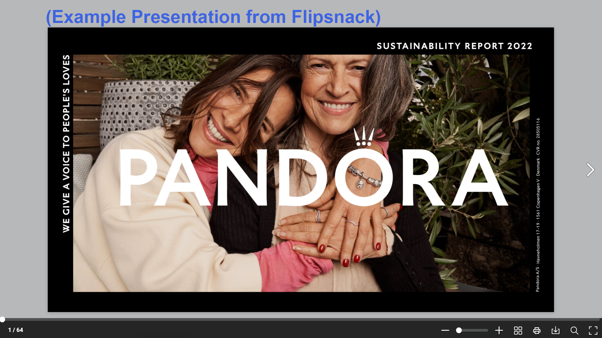
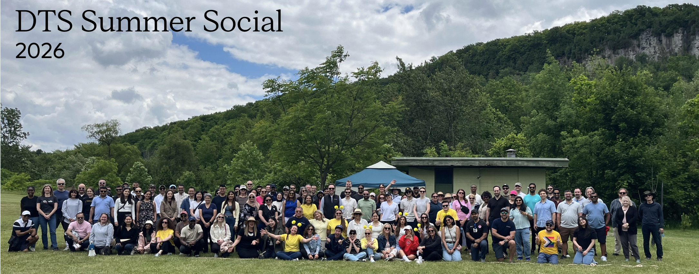
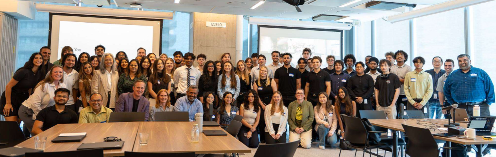

Work Term Report 5

- 💼 Role
- Associate Front-End Developer
- 🧑💻 Team
- Global Front-end & Accessibility
- 📅 Term
- Summer 2026 (May 4 – Aug 28)
- 📍 Location
- Toronto, ON (Hybrid)
Introduction:
After such a meaningful winter term, I was so excited to return to Sun Life Financial for the summer as an Associate Front-End Developer! Last winter, joining such a large, global company was both exciting and intimidating. This time around, however, I came back already familiar with my team, our tools, and how things work, which allowed me to hit the ground running and take on more ownership than ever before!
This Summer 2026 term was my fifth co-op work term, and I am so appreciative of the opportunities and experiences I've had at Sun Life this summer! Building upon my first term, this term was filled with familiar and new projects, technology, and challenges that continued my growth exponentially.
For a deeper dive into Sun Life, my team, and my first term here, please refer to my Work Term Report 4.
About My Team:

Same as last winter, I am part of the Global Front-end and Accessibility Team within MARTECH. As a quick refresher, Sun Life has several front-end teams that support different regions, such as Canada, the U.S., and Asia. My team acts as the central team responsible for Sun Life's main website platform; developing and supporting the shared components, templates, and standards that regional sites use to ensure a consistent and reliable web experience worldwide!
This summer, especially, Sun Life demonstrated how strongly it is committed to constantly improving with their client's best interests in mind! I saw how teams consistently kept the client experience in mind when making decisions, while also researching and introducing new tools, technologies, and development practices to improve how we work. This commitment to both client-focused solutions and continuous innovation showed me how an established organization can continue to evolve, embrace new opportunities, and find new ways to create meaningful experiences for its clients and employees.
🖥️ Front-end
- Develop and maintain Sun Life's public-facing websites and web pages.
- Build and enhance reusable UI components within Sun Life's internal design system.
- Ensure websites are responsive, accessible, and consistent with Sun Life's design and brand standards.
- Research, test, and implement new and emerging technologies.
- Work in squads with other developers and stakeholders, collaborating to deliver high-quality solutions across the organization.
♿ Accessibility
- Review and solve accessibility-related tickets and issues across digital projects.
- Conduct accessibility audits and provide recommendations to meet standards such as WCAG.
- Promote accessibility knowledge and best practices across teams throughout the organization.
- Collaborate with other developers and stakeholders to ensure accessibility is integrated into all solutions.
- Organize and support accessibility training sessions and workshops for the organization.
I continued to work closely with Deepa Vora, our Front-end and Accessibility Director, Samuel Tesfamichael, our Digital Accessibility Director, and Gopinath Prasanna, our Principal Front-end Developer. Just like last term, my work this summer spanned both sides of the team!
Returning as an Associate Front-end Developer
Last term was all about learning; ramping up on React, APIs, unit testing, and the many processes of a large-scale development environment. Coming back for a second term, I was able to spend less time getting familiar with new tools and more time taking ownership of my work, collaborating across teams, and delivering work that reaches more people across the organization.
This summer, I worked on three main projects: two that continued from last term, and one brand-new proof of concept that I led!
Confluence and SharePoint

Where We Left Off
Last term, I led the redesign and migration of our global front-end Confluence space, transforming it from a text-heavy, difficult-to-navigate space into a modern, visually engaging resource for developers across the organization. Earlier this summer, that redesigned space officially went live! 🎉
What is SharePoint?
SharePoint is a Microsoft platform that organizations use to build internal websites for sharing documents, resources, and information. I first worked with SharePoint during my very first co-op at the College of Arts, so it was fun to return to a familiar platform in a completely different context! At Sun Life, our SharePoint space is one of the ways we share accessibility standards and resources with teams across the organization.
Project Overview
With the Confluence space that I worked on last term going live, I shifted my focus to maintaining that momentum across our other spaces, such as SharePoint. This included inserting French localization of our accessibility standards and resources to serve more teams, updating navigation as new content rolled out, and managing ongoing platform maintenance across these spaces.
📝 My Contributions
- Inserted French localization of our accessibility standards and resources.
- Updated navigation as new content rolled out.
- Managed ongoing platform maintenance across our Confluence and SharePoint spaces.
- Kept resources organized and easy to find as our spaces continued to grow.
🛠️ Skills and Technical Aspects
- User-centered design
- Information architecture
- Content localization (French)
- Navigation design
- Content hierarchy
- Accessibility advocacy
- Inclusive documentation
- Confluence
- SharePoint
What I Learned
Working on these platforms reinforced how important user-centered design is! After spending last term restructuring our Confluence space, I saw firsthand that the work doesn't stop once a site goes live and keeping it useful means continuously maintaining it and updating its navigation as new content is added.
I also learned how to push for accessibility and continuously look for ways to improve our reach. Adding French localization showed me how making resources more inclusive also means making sure they can serve different audiences, and how we convey these resources matters just as much as what they say.
Greenframe Sustainability Dashboard

Where We Left Off
The Sustainability dashboard is a React project I've been working on since last winter. Integrating with GreenFrame, it outputs environmental data, such as Carbon Estimates and Energy Consumption Estimates, to provide teams with actionable insights into their footprint and address the growing importance of web sustainability. Last term, I helped build its foundational structure, including the UI, API calls, unit testing, and Microsoft Single Sign-On.
What is Highcharts?
Highcharts is a JavaScript charting library used to create interactive charts and graphs. Rather than showing data as plain numbers, it makes it possible to display patterns and changes over time in a way that is much easier to understand at a glance!
Project Overview
This term, I continued building the dashboard by implementing a way to visualize its data and trend analyses through Highcharts. This allows developers to track how their code changes influence their digital sustainability metrics over time!
📝 My Contributions
- Implemented data visualizations for sustainability metrics using Highcharts.
- Built trend analyses so developers can track how their code changes affect metrics over time.
- Participated in cross-team meetings to communicate requirements and changes.
- Collaborated with members from different departments throughout development.
🛠️ Skills and Technical Aspects
- Highcharts
- Data visualization
- React
- Component-based development
- Trend analysis
- Front-end best practices
- Accessibility
- Testing
- Requirements gathering
- Cross-team communication
What I Learned
Working on this project significantly expanded my front-end knowledge as a whole, from React fundamentals to front-end best practices, accessibility, and testing. Learning Highcharts was a highlight this term, as it challenged me to think about how to present data in a way that is meaningful and easy for developers to understand.
This term, I also deepened my understanding of software development beyond just writing code! Through cross-team collaboration, I participated in meetings to communicate requirements and changes alongside others from different departments. These experiences have shaped my growth as a developer, strengthening both my technical and collaborative skills!
Flipsnack Proof of Concept (PoC)

What is Flipsnack?
Flipsnack is an external vendor platform that turns content such as PDFs into interactive digital flipbooks, like brochures, catalogs, and magazines that readers can flip through online. Marketing teams often use tools like this to create engaging, interactive content for their audiences.
Project Overview
In these past summer months, I led the research and development of a proof of concept to recreate the interactive marketing tool that external vendors like Flipsnack provide. The challenge was that these vendor solutions often lack accessibility compliance and come with significant costs.
By leveraging AI and developing an internal PoC, I demonstrated how we could deliver the same user experience while improving on vendor limitations— reducing expenses, enhancing customization, and ensuring accessibility standards are met!
📝 My Contributions
- Led the research and development of the PoC.
- Analyzed and deconstructed Flipsnack's platform to understand its functionality and identify improvements.
- Evaluated and compared software libraries to build the solution.
- Developed the PoC using AI, crafting efficient prompts along the way.
- Created markdown files to keep the design consistent.
- Tracked AI costs and time savings.
- Presented multiple demos of the PoC to internal business groups.
🛠️ Skills and Technical Aspects
- Library research & evaluation
- Platform analysis
- AI-assisted development
- Prompt writing
- Markdown documentation
- Design consistency
- Cost & time savings tracking
- Accessibility compliance
- Presenting to business audiences
What I Learned
This project deepened both my technical and strategic skillset! I learned how to evaluate and compare software libraries to build a specific solution, and how to analyze and deconstruct a complex platform to understand how it works and how we could improve it.
It was also my most hands-on experience with AI yet. Beyond using it to build, I learned how to track its costs and time savings, create markdown files for design consistency, and craft efficient prompts. Finally, doing multiple demos of this PoC for internal business groups taught me how to effectively communicate technical concepts and project value as well!
Goals and Reflections
Goal 1 🎯
I will continue to strengthen my front-end development skills by expanding my knowledge of modern web technologies, development best practices, and software design principles!
Reflection ✅
Throughout the term, I continued to strengthen my front-end development skills by expanding my knowledge of modern technologies, best practices, and software design principles. Building on the foundation from my previous term, I became more confident and independent when applying these concepts to real development tasks!
This growth was especially evident through my continued work on the Greenframe dashboard, where I deepened my understanding of React, accessibility, testing, data visualization, and front-end architecture. Implementing trend analyses with Highcharts also challenged me to think critically about how data should be structured and presented. Through the Flipsnack PoC, I further developed my ability to research and evaluate software libraries, explore different implementation approaches, and apply new technologies to solve technical challenges.
Overall, these experiences strengthened my technical decision-making and gave me greater confidence in applying front-end development best practices in a collaborative environment!
Goal 2 🎯
I will continue to strengthen my collaboration and communication skills by becoming a more active participant in team discussions and meetings, and decision-making processes. As I gain more experience and confidence in my role, I wish to contribute more meaningfully to conversations beyond my individual development tasks and support the team's shared goals and initiatives.
Reflection ✅
I continued to strengthen my collaboration and communication skills by becoming a more active participant in team discussions, meetings, and decision-making processes! As I became more comfortable in my role, I gained confidence in sharing my ideas and asking questions.
My work on the Greenframe dashboard provided valuable opportunities to collaborate with team members and stakeholders from different departments, particularly through discussions around requirements, changes, and implementation decisions. While working on the Flipsnack PoC as well, I initiated and led stand-up meetings with other team members and actively participated in project discussions. Perhaps one of the biggest indicators of my growth is that I even hosted a discussion workshop with my whole Front-end and Accessibility Team, leading and facilitating the discussion!
Overall, these experiences helped me become a more confident and engaged team member while strengthening my ability to communicate and collaborate effectively toward shared goals.
Goal 3 🎯
As artificial intelligence continues to play an increasingly significant role in the technology industry, I would like to strengthen my understanding of AI tools, trends, and applications relevant to my work.
Reflection ✅
I strengthened my understanding of AI tools and their applications within software development by gaining hands-on experience incorporating AI into my development workflow. This was especially evident through the Flipsnack PoC, where I used AI to support development, create markdown files for design consistency, and develop more effective prompting strategies. I also tracked the time and costs associated with using AI, allowing me to better understand its practical benefits and limitations.
Through this experience, I learned the importance of critically evaluating AI-generated suggestions rather than relying on them without validation. I became more comfortable identifying where AI could improve efficiency while still applying my own technical knowledge and judgment.
Overall, this experience gave me a stronger understanding of how AI can be used responsibly and effectively as a development tool.
Conclusions and Acknowledgments


I can't believe it has already been eight months at Sun Life... time has flown by! Coming back for a second term, I got to see how much I've grown since first joining the team last winter. This summer gave me the opportunity to take on more ownership, lead my own proof of concept, and contribute to projects that reach teams across the organization.
Thank you to Deepa Vora, my manager, for giving me such a great opportunity to be in this role and for being an amazing and supportive mentor. To Gopinath Prasanna and Samuel Tesfamichael, for teaching and guiding me these past eight months alongside the rest of our Global Front-end and Accessibility team! I also want to thank all the Sun Life leaders who provided so much insight throughout my time here, and all the co-op students for making my time here even more enjoyable.
I feel very fortunate to have spent two terms with a team that places such strong emphasis on accessibility, sustainability, and innovation. The technical and professional skills I've gained here will stay with me as I head into my final year, and towards a career in User Experience or Front-end Development!